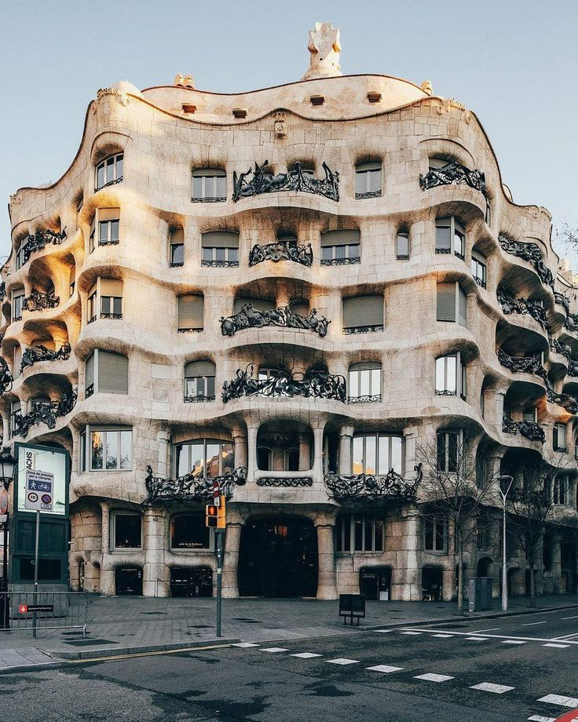

İspanya Mimarî

Gaudi’nin Barcelona’daki eşsiz yapıları.Antoni Gaudí’nin imzasını taşıyan yapılar, Barcelona’nın mimari kimliğini dünyada eşsiz kılar. Doğadan ilham alan organik formlar, renkli seramik detaylar ve akıcı çizgiler; özellikle Sagrada Família, Park Güell ve Casa Batlló gibi eserlerde kendini gösterir. Gaudí’nin tasarımları yalnızca birer bina değil, sanat, mühendislik ve hayal gücünün birleştiği yaşayan mimari deneyimlerdir

Madrid’in klasik mimari örnekleri ve saraylar.Madrid, İspanya’nın kraliyet geçmişini yansıtan görkemli sarayları ve klasik mimari yapılarıyla dikkat çeker. Geniş meydanlar, simetrik cepheler ve zarif detaylarla şekillenen şehir;özellikle Kraliyet Sarayı ve tarihi yapılarıyla Avrupa’nın en etkileyici başkentlerinden biri olarak öne çıkar

Endülüs’teki tarihi köprüler ve binalar.Endülüs bölgesi, İslam, Hristiyan ve İspanyol kültürlerinin izlerini taşıyan tarihi köprüleri ve mimari yapılarıyla dikkat çeker. Taş kemerli köprüler, dar sokaklar ve yüzyıllardır ayakta kalan yapılar bölgenin zengin tarihini ve kültürel çeşitliliğini gözler önüne serer.